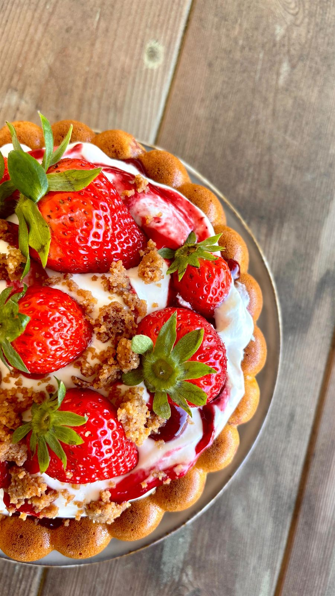

Ma version du gâteau aux fraises : un gâteau au yaourt vanillé, un coulis de fruits rouges, une chantilly mascarpone et un crumble croustillant par-dessus.
Temps total : 1 h 30
Préchauffe le four à 180°C.
Dans un saladier, mélange le yaourt, le sucre et les œufs.
Ajoute la farine et la levure, puis l’huile, la vanille et la pincée de sel.
Mélange jusqu’à obtenir une pâte bien lisse.
Ajoute tes 6 fraises préalablement découpées.
Verse dans un moule beurré et enfourne à 35 /40 minutes à 180 degrés
Laisse refroidir complètement.
Mélange du bout des doigts le beurre et la cassonade jusqu’à obtenir une texture sableuse.
Étale sur une plaque et fais cuire 10/15 min à 180. Surveille : il doit être légèrement doré et croustillant.
Laisse refroidir → il va durcir un peu et devenir bien crunchy
Réserve.
Fouette la crème bien froide avec le mascarpone jusqu’à obtenir une texture ferme et onctueuse.
Ajoute le coulis de fruit rouge - ou ta confiture de fraise( il faut que ça tapisse le dessus de ton gâteau )
Étale la chantilly sur le gâteau refroidi, ajoute les fraises puis parsème de crumble pour le côté croustillant
Retrouvez toutes mes recettes, et suivez les nouveautés chaque semaine sur Instagram.